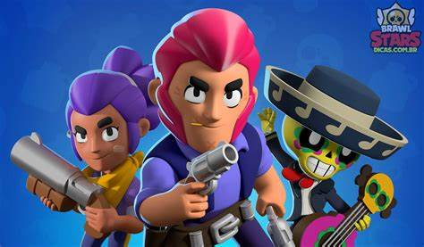
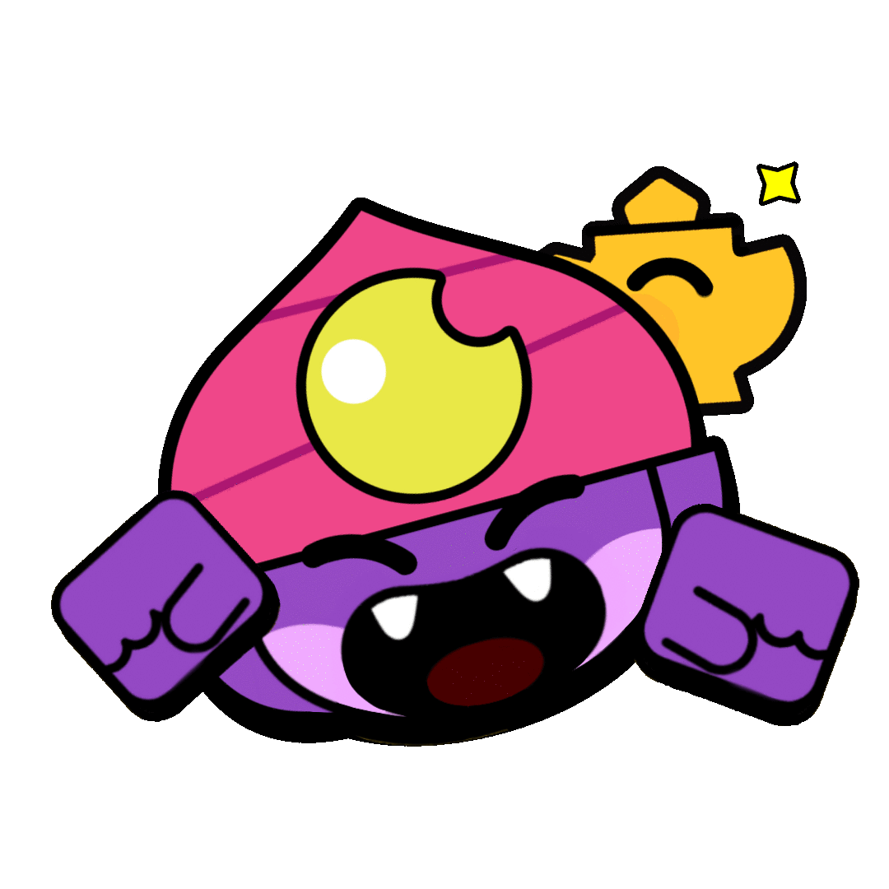

e hoje vou explicar um pouco sobre meu jogo favorito, brawl stars.
Brawl Stars é um jogo eletrônico mobile focado nos estilos de arena de batalha, multijogador online e habilidades em terceira pessoa, desenvolvido e publicado pela empresa produtora de jogos Supercell. Foi lançado globalmente (exceto na China) no dia 12 de dezembro de 2018 para iOS e Android. Ele apresenta vários modos de jogo, cada um com um objetivo diferente. Os jogadores podem escolher algum brawler (personagem combatente controlado por joysticks na tela em uma partida) de entre os adquiridos.
nessa imagem a cima estão o Poco, Jesse e Colt. primeiros personagens do jogo.
Perto de seu lançamento, a Supercell começou a excluir suas redes sociais criadas para o jogo, causando certo transtorno entre os jogadores. Mas, no dia 14 de junho de 2017, o jogo foi anunciado pela Supercell em uma livestream no YouTube. No dia seguinte, 15 de junho de 2017, o jogo foi lançado em beta na App Store do Canadá. Em 19 de janeiro de 2018 o jogo também estava disponível na Finlândia, Suécia, Dinamarca, Noruega, Irlanda, Singapura, Hong Kong, Macau e Malásia. Em 26 de junho de 2018, o jogo recebeu sua versão para Android, ainda em beta. Em 14 de novembro de 2018, a Supercell fez uma livestream onde até então ninguém sabia se traria o lançamento global ou encerraria definitivamente o jogo. Por fim, em 12 de dezembro de 2018, ele foi lançado globalmente, faturando 63 milhões de dólares somente no seu primeiro mês.
conforme o jogo foi se tornando popular, tanto na China como no resto do mundo, a Supercell foi adicionando novos modos e novos brawlers. Atualmente, o jogo conta com 72 brawlers diferentes, de 7 tipos diversos: Tanque, Controle, Destruidor, Algoz, Suporte, Detonador, Tiro preciso Existem, também, 6 raridades diferentes para cada brawler, usadas para diferenciar a dificuldade de se obtê-los. Elas são:Brawler inicial, Raro, Super-raro, Épico, Mítico e Lendário.